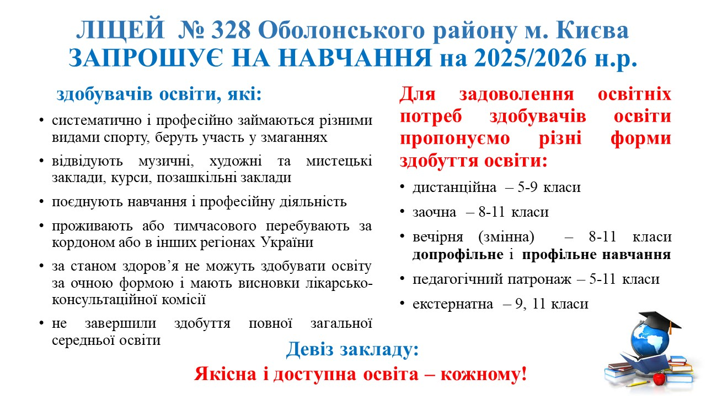

Вступ на 2025/2026 навчальний рік
Ліцей № 328 запрошує на навчання здобувачів освіти, які потребують різних форм здобуття освіти: дистанційної, заочної, вечірньої (змінної), екстернатної та педагогічного патронажу.
Сторінка створена для того, щоб вступ був зрозумілим: без зайвого хаосу, з чітким переліком необхідних документів, короткими поясненнями та окремими матеріалами щодо результатів відбору.
Для вступу до ліцею важливо завчасно підготувати особову справу, копії документів та медичні довідки відповідно до вимог.

Форми здобуття освіти
Дистанційна форма
Для 5–9 класів; актуальна для дітей, які потребують гнучкого формату навчання.
Заочна / вечірня
Для 8–11 класів; зручна для тих, хто поєднує навчання з іншими життєвими обставинами.
Екстернат / патронаж
Для окремих категорій здобувачів освіти відповідно до потреб і умов.
Перелік документів
- Особова справа здобувача освіти зі школи
- Ксерокопія свідоцтва про народження
- Копія паспорта / ID-картки та витягу з демографічного реєстру (за наявності)
- Медична картка здобувача освіти та форма 086-1/о
- Ідентифікаційний код